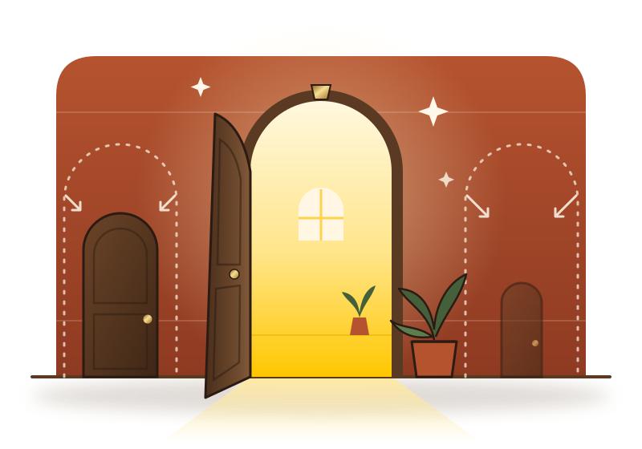

From his journal, years later
Marrying her “would have made me happy beyond my dreams.” And yet “without her I could be happier in my unhappiness than with her.”
— Søren Kierkegaard
You could still change careers. Move cities. Start over. There is something comforting about knowing you still could. But keep every door open long enough and you never walk far enough through one to see what’s on the other side.

Play once before Friday. Don’t overthink it. We’ll compare scores at the table.
Each door hides points. Tap a door to walk in. That tap earns nothing.
Once you’re inside, tap the same door again to collect. Each door pays a different amount.
Every tap, the doors you’re not using shrink. Ignore one for 8 taps and it’s gone for good.
Pick a door. Any door.
You just played a short version of an MIT experiment (Shin & Ariely, 2004). Players had three doors and 100 clicks. The smart move was to explore briefly, find the best door and stay. Instead, people kept running back to rescue doors that were about to vanish, and earned less for it. The researchers gave them the payoffs, let them practise, made switching more expensive. They even let a vanished door come back for free. People still ran around keeping doors open. Closing one simply felt intolerable.
The philosopher who wrote the book on commitment couldn’t keep one.
From his journal, years later
Marrying her “would have made me happy beyond my dreams.” And yet “without her I could be happier in my unhappiness than with her.”
— Søren Kierkegaard
Søren, 27, proposes to Regine Olsen, 18. She is singing; he snatches the sheet music out of her hands and tells her he has wanted her for two years. She says yes.
Months of dread. He tries to make her leave by acting like a scoundrel. She sees right through it.
He breaks it off and returns the ring by mail, the 19th-century breakup text. Then he flees to Berlin and writes Either/Or, a huge book in praise of marriage.
They pass each other on the streets of Copenhagen almost every blessed day.
They never speak again.
He dies at 42 and leaves her everything he owns. She has married her old tutor, who turns it down.
Kierkegaard called anxiety “the dizziness of freedom”: standing at a cliff edge, the drop in your stomach comes partly from knowing you could step forward. A rock on the same ledge feels nothing. It has no choice to make.
He thought people move through three stages, each one an answer to the emptiness of the one before. It isn’t a staircase you climb once: you can slip back on any given Tuesday.
Sample everything, savour everything, commit to nothing. Closed doors are boring.
CasanovaLaw degree at 17, never used it. Seminary, army, violin, alchemy, spying, 120 lovers, a famous escape from a Venetian prison. He ended up as a lonely librarian in a Bohemian castle, rewriting his old adventures. The only commitment he ever kept was a commitment to getting out.
Choose, take responsibility, and let the choices build a person. Decide comes from the Latin decidere: to cut off.
Daniel GilbertA high-school dropout takes a bus across Denver to sign up for creative writing. It’s full. “What’s open?” Psychology. Twenty years later he’s a Harvard professor and one of the best-known happiness researchers. The door he wanted was closed, so he walked through the open one and stayed.
Not only about God. A commitment that goes past what evidence can prove, until it stops feeling like a choice and starts feeling like who you are.
Charles Bukowski1969: a publisher offers $100 a month for life if he quits his post-office job of fourteen years and writes full time. Guaranteed misery or probable starvation. He chose to starve. Certainty shows up afterwards, as a by-product of committing.
Everyone wants to jump straight from stage 1 to stage 3, to the musician who never wonders whether to play. But you can’t leap from a place where you’ve never closed a door. The ethical stage is where you practise.
Each one has a question for the table. Agree, disagree, or tell us where it breaks in your own life.
Job-seekers who checked every option got starting salaries about 20% higher than those who stopped at “good enough.” They were also less happy, had more regret and were more depressed. They keep auditing the choice, so it never quite lands.
Are you a maximiser or a satisficer? About what?
Iyengar, Wells & Schwartz, 2006Harvard students each kept one of their own photos. Half were told the choice was final; half could swap later. The “final” group grew to like their photo more. Almost nobody actually swapped. Just having the option kept them from settling in.
Is “let’s see how it goes” freedom or a trap?
Gilbert & Ebert, 2002In the short term, regrets are split. Looking back over a whole life, 84% of people name something they failed to do. And no one regretted the time spent learning a skill, even one they later dropped.
Does that match the regrets you see around you?
Gilovich & Medvec, 1994–95People who built an IKEA box would pay 63% more for it than for one already built. But only if they finished. Stopped halfway, or made to take it apart, and the love disappeared. You don’t love it and then build it. You build it, and then you love it.
What did you quit just before it would have paid off?
Norton, Mochon & Ariely, 2012Moving in because the lease ran out. Staying in a job because quitting felt scary. Psychologists call it sliding, and it’s a different act from deciding with your eyes open and your weight behind it.
Name something big in life that most people slide into.
Stanley & Rhoades, 2006In 1985, the most common number of people Americans could confide in was three. By 2004 it was zero. The bowling alleys didn’t close; the leagues did, the thing that expected you every Thursday whether you felt like it or not.
Is a Friday club a league? What makes people keep coming back?
McPherson et al., 2006 · Putnam, Bowling AloneThe psychologist James Marcia crossed two questions and got four ways to hold an identity. Tap a box. You might be in a different one for work, for where you live and for love.
Staying isn’t automatically brave. Three fakes feel exactly like the real thing from the inside, and each comes with a test.
Business students who had made a bad investment themselves put more money back into it than students who inherited the same bad call. Perseverance looks forward. Escalation looks back, trying to prove the old decision was right.
The honesty testWhat would leaving force you to believe about your past?
The son who joined his father’s firm straight out of college: calm, stable, satisfied, until something challenges him in a way his father never would have, and he has no way of handling it. The commitment was borrowed, not built.
The defence testWhen someone you trust questions it, does it feel like a personal attack?
The founder who can’t imagine life without the company. The executive who can’t answer “Who are you?” without a job title. The commitment has eaten the person who once chose it.
The separation testIf it disappeared tomorrow, would you recognise who was left?
Knowing everything you know now, would you choose this again today if you had no history with it?
Have a think before you come. Bring a story, not a verdict.
Am I choosing this, or am I using this to avoid the experience of choosing?
Kierkegaard never married Regine. He became one of the most important philosophers in the West, and died alone. Commitment doesn’t come with a guarantee. It’s the decision to act anyway, build anyway, stay anyway.
The ideas and research on this page come from Commitment, Solved., a guide from the Solved podcast. If you want to go further: Either/Or and Fear and Trembling by Kierkegaard, or one of these:
Not a member yet? Send us a voice intro and join us at the table.